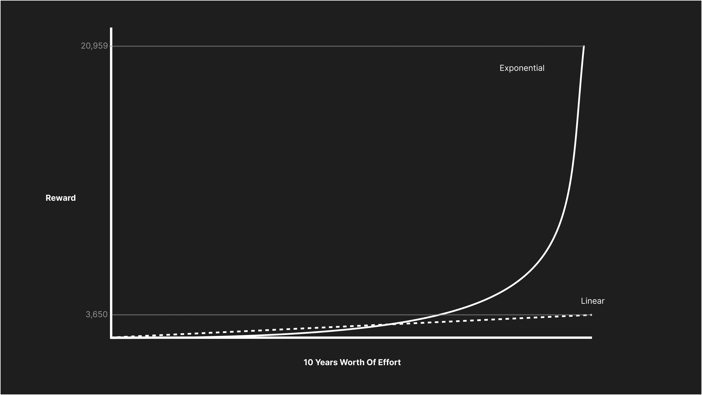

Linear, Compound & Exponential
March 09, 2024
Success, or any kind of achievement in any field or aspect of life, depends on the time one puts into it. We all know this. Still, it is so hard to sustain any endeavour for a considerable amount of time. We as individuals, teams, companies and society shift priorities way too often!
There is no hidden secret or talent that leads some people to have a tremendous impact on the world, whether positive or negative. It all just boils down to the fact that they persevered for longer than others.
So, the question arises: Why is it so hard to sustain effort? It seems that this is the case because we default to a linear way of thinking about effort and reward. The same message is repeated by people who have made great contributions to their fields, from Walter Isaacson to Sam Altman. This seems to hold true at the personal, organisational, and societal levels.
Why do we think linearly, and what pushes us to do so?
Linear observations: Even though nature is full of artifacts that demonstrate exponential properties, such as population growth, our observation abilities are limited, and thus we end up perceiving them as linear. An analogy that helped me wrap my mind around this was the fact that the Earth appears flat from our daily vantage point. Even in our mental model, which we rely on for directions, when going from point A to B, we ignore the curvature of the Earth. Neither does Google map show the curvature. There is nothing (at least I couldn’t find anything) in our environment that we can observe on a daily, weekly, or monthly timescale that shows the compounding effect and exponential growth in all its glory. This defaults us to linear.
Distractions & temptations: The digital age should be called the age of distractions. Why give it a cool name instead of a true name? Not only are there an insane number of distractions, but they are also fine-tuned to hack our dopamine response to make them harder to resist, and each one is presented as a better shortcut to success. This leads us to hop from one thing to another in the hope of reaching our desired destination faster. In reality, we are simply going around in circles, hoping to find a high effort-to-reward ratio on day 1. They make it hard to stick to one path.
One side of the success coin: Instagram is full of end states, not journeys or efforts. When we see success in the wild, we only get to see one side of it, the success or reward, not the effort — that side of the coin we have to imagine. It creates an extremely biased impression of what it took that person, company, or society to get there. We see the amazing goals Ronaldo scores, not his training regimen where he arrives two hours before all his teammates and has done so for years. It is hard to imagine effort, especially on long timescales. This distorts the effort and reward correlation in our minds.
Default units of measurement and planning: Almost all conversations at a company are on a quarterly level. It is thus no surprise that we think about what we can deliver in a quarter, leading us to rarely, if ever, pick a project that might take longer. In our personal lives, we tend to think in terms of days or months. I believe this is the case because we have dedicated names for these timescales, which nudge our subconscious — Q1, Wednesday, February. New Year is the rare occasion when we think on a yearly scale because we have a word in the form of a number that becomes part of our lexicon for a while, thus we set annual goals. When was the last time you set a year-long goal in May? While writing this, I was reminded of what Albus Dumbledore said about ‘words’: “Words are, in my not-so-humble opinion, our most inexhaustible source of magic.”
All the returns in life, whether in wealth, relationships, or knowledge come from compound interest. We need to string together enough days of iterations to realise monumental changes.
What are the consequences of thinking linearly?
When we think linearly, we end up in one of two situations: We either give up, or we make irrational decisions in our effort to produce a linear outcome. In the first case, we never reach our goals, and in the second, we are unable to sustain them.
We start running, don't see a change in our endurance or weight in a few days, and give up. Alternatively, we start taking supplements or medication. We may reach our goals, but it takes a toll on our bodies, and eventually, we have to stop, unable to sustain the end state. Back to square one.
Killedbygoogle.com is a good example of an organisation giving up on projects or changing priorities. Google, of course, is not the only company to have shelved good initiatives. When it comes to irrational decisions, a.k.a. supplements for short-term gains, corporations' favourites are layoffs and outsourcing. Boeing is an example of the disastrous consequences such actions can have: people died so someone could make more money in Q1 of one year, instead of Q4 of the following year. (Downfall: The Case Against Boeing)
On the level of societies (and governments), this can be observed in the laws they create. I find that smoking laws illustrate this point well; everyone knows it is bad, but instead of a total ban, we have a patchwork of laws that have increased taxes, added age restrictions, and disturbing photos to dissuade usage. Everything but ban it. Lawmakers seem to believe that each bit of effort they put in is going to produce a linearly proportional reward. By one estimate, smoking costs England £17bn in economic terms annually. Imagine being able to add £17bn to a country’s productivity with a one-sentence law! Despite its simplicity, the effort required to pass such laws is high given the sheer amount of lobbying. The effort-to-reward ratio is off and thus seems to be beyond reach.
What does exponential thinking look like?
Exponential thinking manifests itself as habits. Why habits? Because habits are actions that we repeat over a long duration—and that is what it takes to move mountains. A 1% improvement every day for a year leads to a ~40x improvement, and over a decade, to ~21,000x. Imagine being twenty-one thousand times better at something! There is no problem big enough to withstand that kind of sustained effort.
The quest to eradicate Smallpox started with Edward Jenner's experiments in the late 18th century. The World Health Organisation launched a global vaccination campaign in the mid-20th century and eventually in 1980 we managed to eradicate smallpox. It took humanity ~180 years!
SpaceX was started on 14th March 2002, and it was on 21st December 2015 that they achieved their first soft landing. The cost per kg to orbit for the Space Shuttle was north of $50,000, and for Falcon 9, it is ~$2,500. It took over a decade of sustained effort.
OpenAI was founded on 11th December 2015, and on 30th November 2022, they launched ChatGPT. It took seven years.
All the returns in life, whether in wealth, relationships, or knowledge come from compound interest. We need to string together enough days of iterations to realise monumental changes.

How do we get ourselves to start thinking in exponential terms?
I started with this question only to realize that this is perhaps not the right one to ask. It is extremely hard, verging on impossible, to imagine the rate of change of the effort-to-reward ratio. We can all imagine how it feels to go 10 km/hr or 100 km/hr, but if I asked you to imagine going 2.72 x 10^(-6) km/hr², you would struggle. PS: that converts to 9.8 m/s², aka gravity. Maybe if you jump out of a plane every weekend, you could imagine it. While it is hard to imagine this rate of change of the effort-to-reward ratio, we know that it will improve with each cycle of effort that we put in. This led me to change my question to ‘How do we get ourselves to sustain effort for longer time periods?’. I found the following four ways.
Track the biggest total, not the rate: I have found that I can get myself or my team to sustain efforts for longer by tracking a big total. For example, this year I started taking the stairs (up and down) to my apartment on the 24th floor every day in pursuit of better health and fitness. Now, I could count the rate, which is 24 floors per day, but this doesn’t really change. Or, I could count the number of days, which stands at 12 as of this writing. Or, I could count the total number of floors, which stands at 408; now we are talking! The target is to get to 2,100 floors by the end of April, which will mean that I have gone up and down Mt. Everest; now that gets me out of bed. A large total is intrinsically more motivating. For my team that works on cloud storage, it is files uploaded—a big number that grows slowly at the start but with each order of magnitude change helps build momentum. The beautiful thing about this approach is the graph it produces that shows the exponential growth that you can visualise; a picture is worth a thousand words.
Set a goal for effort, not outcome: Another way I found useful is to set a goal for the number of repetitions (effort) instead of the outcome. I wanted to learn Rust and build a project. Before I started, I set a goal to reach 1,000 commits. No matter how small or bad the code is, I am going to make 1,000 commits. I am on 32. If one wants to get fit, they could set the goal to run 1,000 km. On a team level, this looks like the number of experiments we will run. The learnings from each experiment will compound, reducing the probability of giving up on a tough goal just because the first few attempts failed.
Set a BHAG (Big Hairy Audacious Goal): A truly audacious goal can recalibrate the time horizons we think on—like going to the moon or solving climate change. They don’t always need to be this grand, but any big project where there aren’t any obvious shortcuts or small wins along the way, you know you just need to get to the end to realise any return on investment.
Thinking on a longer time horizon: 'What, in a year, would I wish I had started working on a year ago?' is the opening statement in my team's OKR document. This extends to setting only annual goals. Quarterly goals have been replaced by quarterly progress check-ins. Solving hard problems takes time, and thinking in quarters will prevent one from even starting work on them.
So?
We need to wrap our heads around the fact that the effort-to-reward ratio will start at an abysmal level but will improve, guaranteed. All the returns in life, whether in wealth, relationships, or knowledge, come from compound interest. We need to string together enough days of iterations to realise monumental changes. Instead of thinking in days or quarters, we need to think in years and decades. And maybe more of us should start thinking in centuries, given that it took us 180 years to eradicate smallpox.